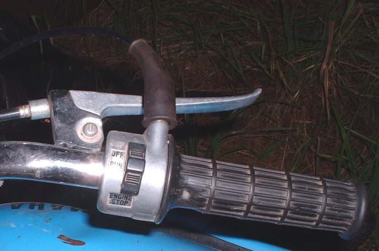
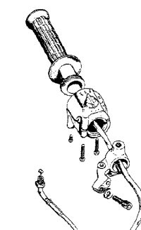
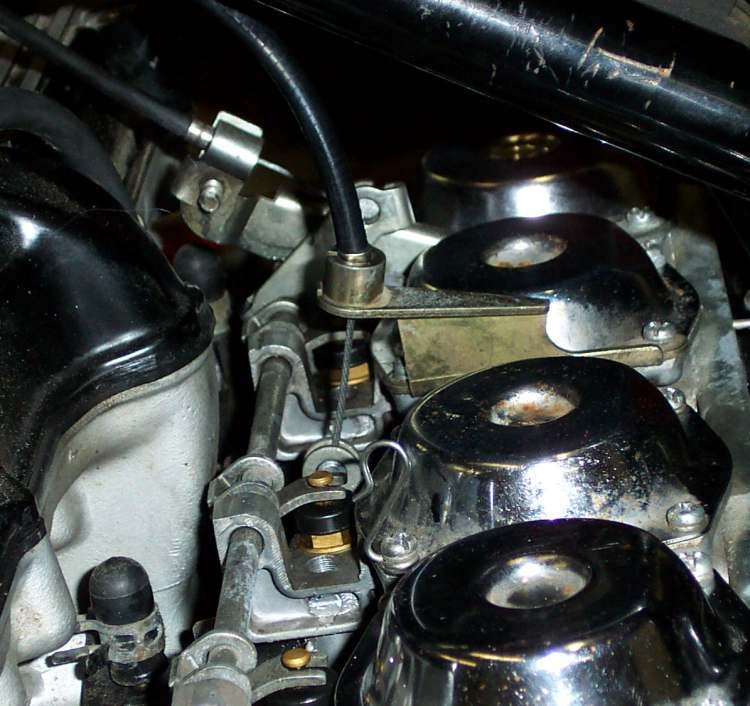

Home mechanic (basic tools) · Time: 30 to 60 min (estimate) (estimate)
A throttle that is stiff, slow to close or sticks part-open is dangerous. The cause is usually a dry or frayed cable, a dirty grip tube on the handlebar, or a cable routed with a tight bend. This job cleans and lubricates the grip and cable, or fits a new cable.
Safety
- Do not ride with a throttle that does not snap shut.
- Engine off and cold. You may need to lift or remove the fuel tank to reach the cable: work outside, no flames, catch any fuel.
- Some cables have a plastic lining and should not be oiled; check the maker's advice.
You need
- Screwdrivers for the grip housing, spanners for the adjusters.
- Cable oil and a cable luber clamp, or a small plastic bag taped round the cable end as a funnel.
- A new cable of the same part number if the inner is frayed, kinked, or rusted, or the outer is crushed or cracked.
Steps: grip and lubrication
- Slacken the grip-end adjuster fully.
- Open the throttle housing on the handlebar (usually two screws). Unhook the cable end from the grip tube.
- Slide the grip tube off the bar. Clean the bar and the inside of the tube. Remove burrs. Check the bar-end weight is not pressing on the grip, and that grip glue is not on the tube.
- Put a thin film of grease on the bar where the tube turns. Look at the cable end: broken strands near the nipple mean replace the cable.
- Fit the luber or bag funnel on the top of the cable. Feed oil until it comes out of the bottom end. Work the inner cable in and out.
- Refit the cable end, the tube and the housing. Make sure the housing does not pinch the tube.
- Set free play: Adjust throttle free play.
Steps: replace the cable
- Take photos of the cable route from grip to carburettor or throttle body, including every guide and clip.
- Tape the new cable alongside the old one and follow the same route before you remove the old one, so the route stays correct.
- Disconnect the old cable at both ends. At a slide carburettor, the cable end is in the slide under the top cap; keep the slide, needle and spring together and the right way up.
- Connect the new cable at both ends. Lubricate it unless it is lined.
- Secure it in the original guides. Keep it away from the hot engine and exhaust and away from tight bends.
- Set free play.
Check your work
- Grip snaps shut from full open with bars straight, full left and full right.
- Engine at idle: no rise in idle at either lock.
If it did not fix the problem
- Snaps shut but idle still high: Idle speed is too high or Clean the throttle body.
- Sticky slide inside the carburettor: Clean the carburettor.